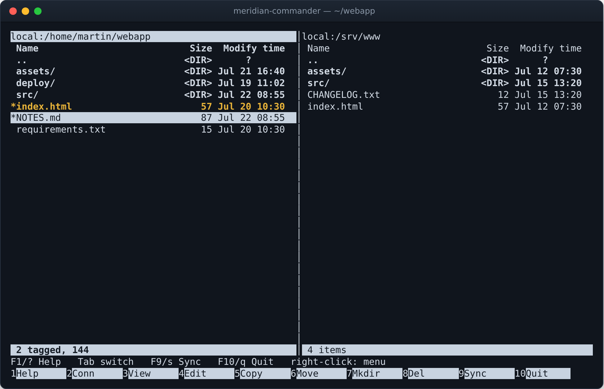
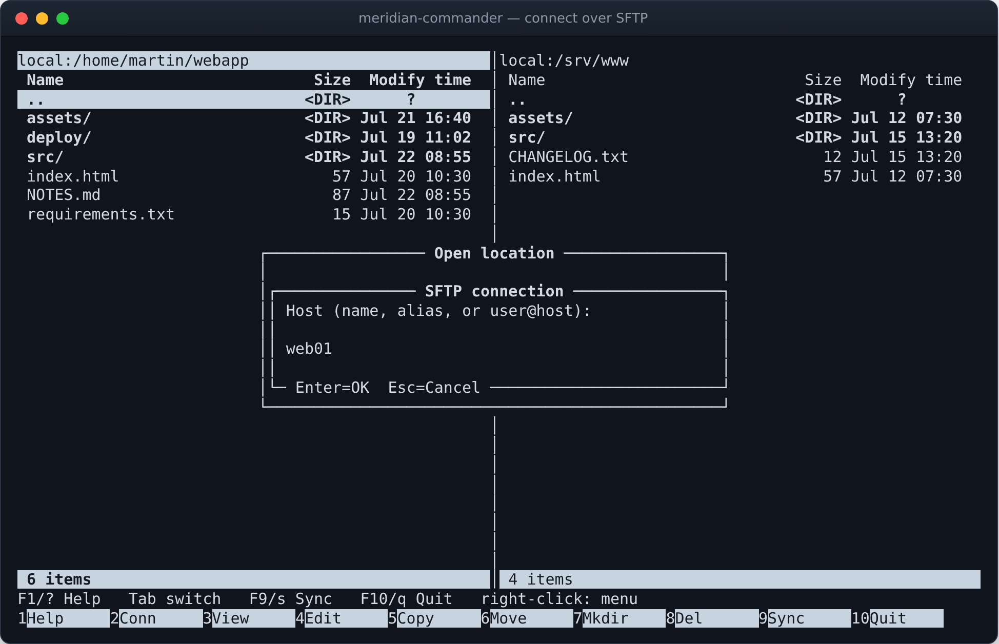
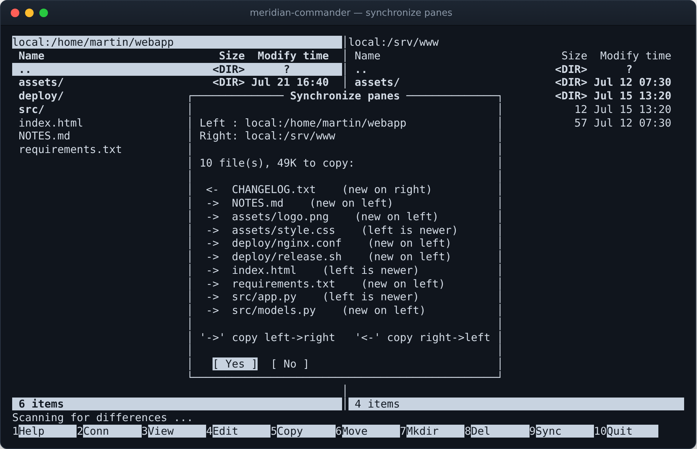
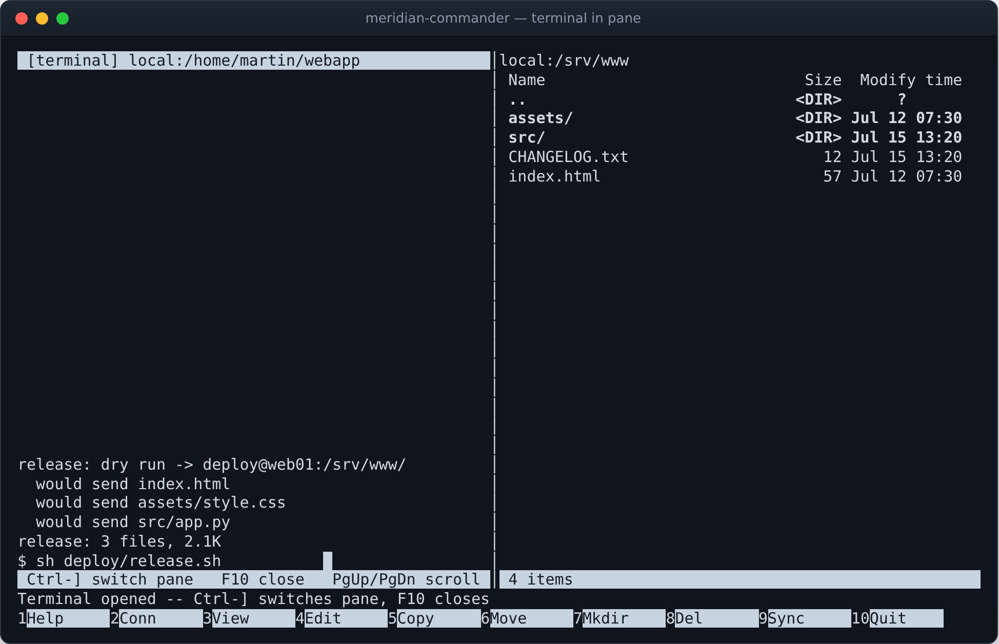
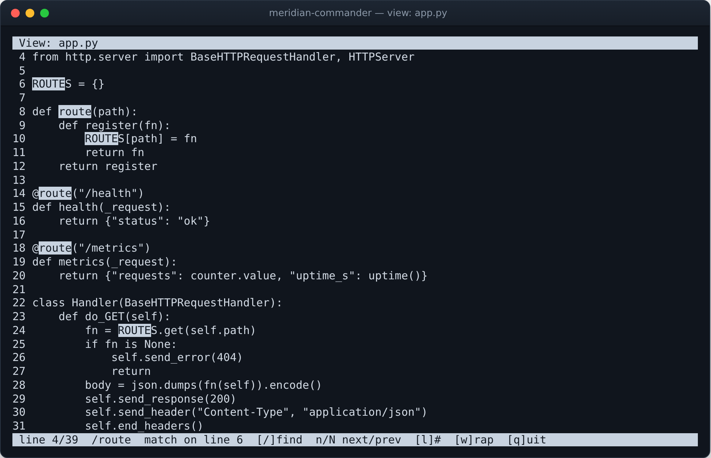
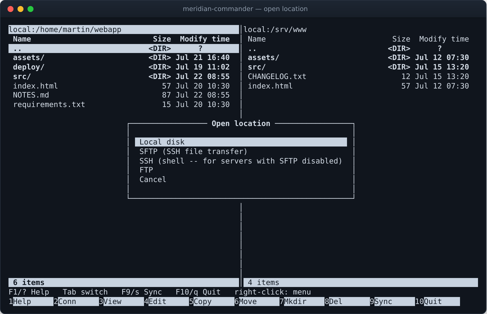
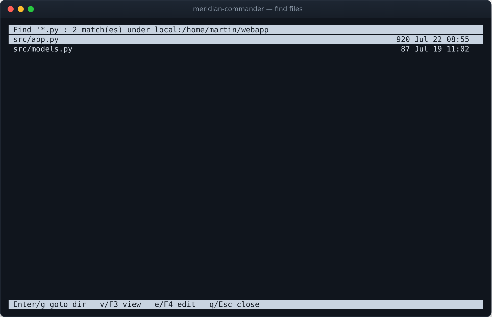
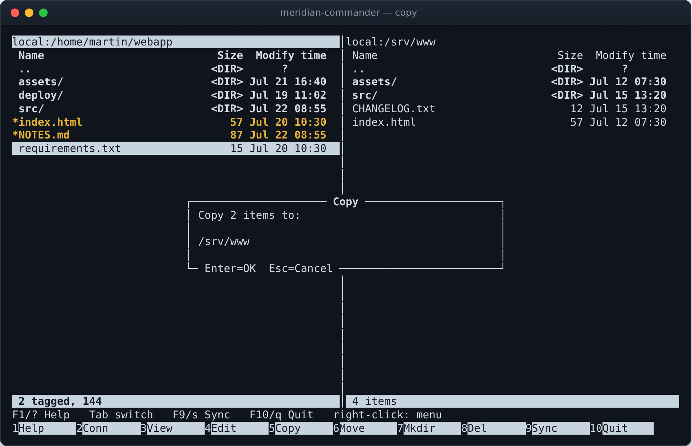
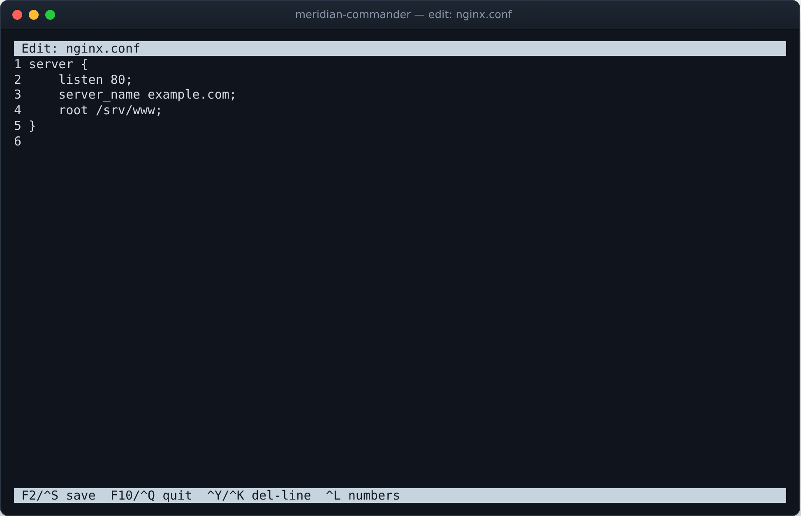
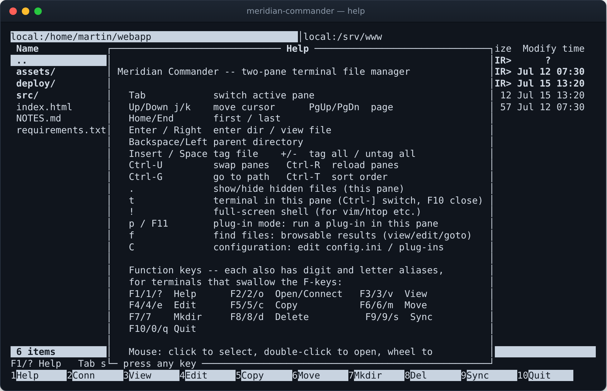

The two-pane file manager
for everywhere your files live
A terminal file manager in the spirit of Midnight Commander, written in pure Python. Put the local disk in one pane and an SFTP, SSH or FTP server in the other — then copy, move, sync, view and edit as if it were all one machine.
The meridian is noon — the other end of the clock from midnight.
pip install "meridian-commander[ssh]"
{kind=link}

Runs in any terminal · Python ≥ 3.9 · Linux & macOS · GPL-3.0 · zero required dependencies for local + FTP use
One interface, any pair of locations
Every location — local disk, SFTP, SSH shell, FTP — implements one small filesystem interface, so the copy, move and sync engines are written once and work across any pair of panes: local→remote, remote→local, even remote→remote.
Two independent panes
Browse two locations side by side. Tab between them, swap with Ctrl-U, sort, tag files for batch operations, and toggle hidden files per pane.
Local + SFTP + SSH + FTP
Each pane can point at the local disk or a remote server. SSH-shell mode works even on servers with the SFTP subsystem disabled, driving ls, cat and friends over the SSH channel.
Bidirectional sync
One key compares both trees and copies the newest version of every file in whichever direction is needed. Full preview before anything is written, and nothing is ever deleted.
Viewer & editor built in
A scrollable viewer with smart-case search and highlighted matches, and a real in-place editor with save on Ctrl-S — both work on remote files too.
Terminal inside the pane
Press t and the pane becomes a shell in that pane's directory — a real pty locally, or an interactive shell over the pane's existing SSH connection.
Find files, browsably
Search a pane's tree by substring or glob — remote panes included — and get a result list you can view, edit or jump into directly.
Pane plug-ins
A plug-in takes over a pane and can see the opposite pane's filesystem. Writing one takes a dozen lines of Python; built-ins include an SSH JSON push and run-remote-script.
Mouse support
Click to select, double-click to open, wheel to scroll, right-click for a context menu of actions — alongside full keyboard control.
Pure Python, stdlib core
Local and FTP use run on the standard library alone. SFTP/SSH needs only the optional paramiko package. No compiled extensions, no framework.
If ssh mybox works, typing mybox here works
Your SSH config, understood natively
Meridian reads ~/.ssh/config. Enter a host alias or a
user@host string, leave everything else blank, and it authenticates
through your SSH agent and default keys — with HostName,
User, Port and IdentityFile all applied.
- Native, alias-aware
ProxyJump— jump-host chains are resolved and tunnelled entirely inside the app, no externalsshprocess. - Restricted shells handled — file transfer falls back from
cattoddto the raw scp protocol, so viewing and editing work even on appliance shells that answerCommand not supported. - Old FTP servers too — prefers modern
MLSDlistings and falls back to parsing classicLISToutput.
Once connected, a remote pane behaves exactly like a local one.
{kind=link}

Both sides end up with the newest of everything
{kind=link}

A plan you approve, not a surprise
F9 walks both directory trees and builds a plan: files missing on one side are copied over, files present on both sides go in whichever direction the newer copy lives. You see every planned copy — with its reason — and the total byte count before confirming, and you can cancel mid-way.
- Copied files are stamped with the source's modification time, so a second sync finds nothing to do.
- Timestamps within 2 seconds count as equal — no needless copies across filesystems with coarse clocks.
- Nothing is ever deleted.
A shell without leaving the pane
Press t and the pane itself becomes a pseudo-terminal running a shell in the pane's directory, while the other pane keeps working normally. On an SFTP or SSH pane, the shell runs over the pane's existing SSH connection.
- Ctrl-] switches to the other pane while the shell keeps running.
- For full-screen programs like
vimorhtop, ! suspends the UI into a real terminal.
{kind=link}

{kind=link}

View and edit, wherever the file is
The viewer scrolls, searches with smart case (/, matches highlighted, n/N with wrap-around), toggles line numbers and wrapping. The editor is a real in-place editor — insert and delete, sane Enter/Backspace line handling, save with Ctrl-S. Both work on remote files: open a config on a server, fix it, save it back.
A pane that runs your code
Press p to put a pane into plug-in mode. The plug-in takes over the pane
and can see the opposite pane — its filesystem (local or remote), its directory, its
entries — so it can act on whatever you have open next to it. A complete plug-in is
a dozen lines in ~/.config/meridian-commander/plugins/:
from meridian_commander.plugin_api import InputOutputPlugin class Shout(InputOutputPlugin): name = "Shout" description = "Uppercase whatever you type" prompt = "say> " def process(self, line): return [line.upper()]
InputOutputPlugin gives you the classic layout — scrolling output above,
input line below — and self.ctx exposes the opposite pane
(other_fs, other_path, other_entries()).
Subclass PanePlugin instead for full control of drawing and keys.
Built-ins include the in-pane terminal, find-in-other-pane, an SSH JSON push, and
run-remote-script.
More of the app
{kind=link}

{kind=link}

{kind=link}

{kind=link}

{kind=link}

Muscle memory included
The classic function-key row does what it has done since 1986 — and every F-key has a digit alias (1–0) plus a mnemonic letter, for terminals and multiplexers that swallow function keys. A stray Esc never quits the app.
Function keys
| F1 / ? | help |
| F2 / o | open / connect location |
| F3 / v | view file |
| F4 / e | edit file |
| F5 / c | copy to other pane |
| F6 / m | move to other pane |
| F8 / d | delete |
| F9 / s | synchronize panes |
| F10 / q | quit |
Panes & navigation
| Tab | switch active pane |
| ↑↓ / jk | move cursor |
| Enter / → | enter directory / view file |
| Backspace / ← | parent directory |
| Insert / Space | tag file (+/- all / none) |
| Ctrl-U | swap panes |
| Ctrl-G | go to path |
| . | show / hide hidden files |
Power tools
| t | terminal inside this pane |
| ! | full-screen shell (vim, htop, …) |
| f | find files, browsable results |
| p / F11 | plug-in mode for this pane |
| C | configuration menu |
| Ctrl-T | change sort order |
| Ctrl-R | reload panes |
| Right-click | context menu of actions |
Running in under a minute
Install
pip install "meridian-commander[ssh]"
The [ssh] extra pulls in paramiko for SFTP/SSH panes. Plain pip install meridian-commander is enough for local and FTP use — it runs on the standard library alone.
Launch
meridian-commander /etc /var/log meridian # short alias
Optionally pass a starting directory for each pane; both default to your home directory.
Connect
F2 → SFTP → mybox
Type an ~/.ssh/config alias or user@host and leave the rest blank — agent, keys, ProxyJump and all are applied, just like the ssh command.
pip install -e ".[ssh]" for development, or run it straight
from the source tree with python -m meridian_commander. Tests run with pytest.